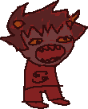
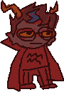
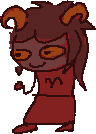
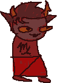

click a ship for a mini-manifesto!
in no particular order, i will sort them when i'm done
dave
karkat a classic, for good reason! their insecurities pair so well together and their dynamic is a lot of fun. the hand holding on the couch in act 7 had an effect on my underdeveloped little gay brain. we've all been there.

sollux
karkat you can't convince me sollux blowing up karkat's computer wasn't a thing, we all saw it i think they'd be kinda concerningly loud in public, very chill behind closed doors. sniping at each other over co-op games and aggressively bullying each other into self care during mental health slumps mostly.

eridan
dave i'm afraid
lee shore
did something irreparable to my brain chemistry
equius
dirk fascinated by the dynamic, afraid to know what goes on in the bedroom. also i am confident dave would
hate
it in a way that is funny
psiionic
sufferer doomed romance for the ages. never not thinking about that man spending a millennium chained to a ship engine
jade
nepeta a couple of silly furries who are also really weird girls who grew up isolated. i think they could both struggle with integrating into the world and find understanding in each other
jade
davepeta dog girl x catbird creature!! their bubbly energy goes so well together. they already know parts of each other really well because of dave, and i also think dp would be great for helping jade embrace her animal side

sollux
aradia mostly pale with a little red on the side. they're cute and i love them

rose
kanaya they both have such a delightful juxtaposition of performed propriety and snarky dork. they also know how to commit to a bit with the utmost seriousness and i need to see where that ends up after 30 years together
dave
john dave
karkat karkat
john karkat
dave
john davekat meets johndave with a little black romance in the middle. really love the idea of these three in a household together, it would be such a mess (positive.) also dave would not be a good auspistice but i still want to see him try. i'm not officially listing davekat with red/black vascillation, but that's only because i don't think dave would identify that way. that's still basically what it looks like
aradia
tavros let those FLARP nerds kiss
eridan
karkat
sollux i just think it would be really funny to make karkat manage this clusterfuck of a situation. he'd either be really good at it or really bad, there's no in between. i also think eridan and sollux could chill slightly just by petty bonding over watching karkat's drama about the whole thing, which is an auspisticism trope i like a lot
june/vriska/terezi
june
terezi june
vriska vriska
terezi another classic. transgender lesbians doing hormones together and they're all slightly awful. making each other better and also worse
close
homestuck
shrines
home